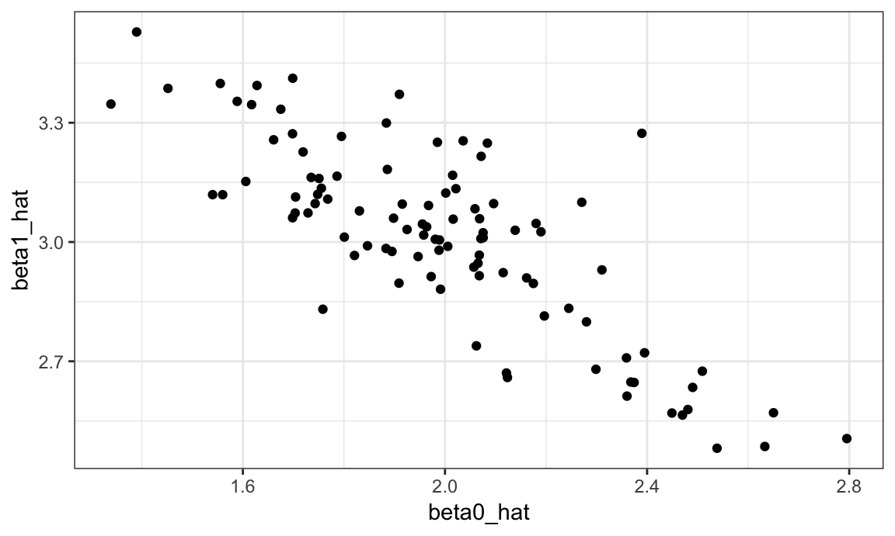
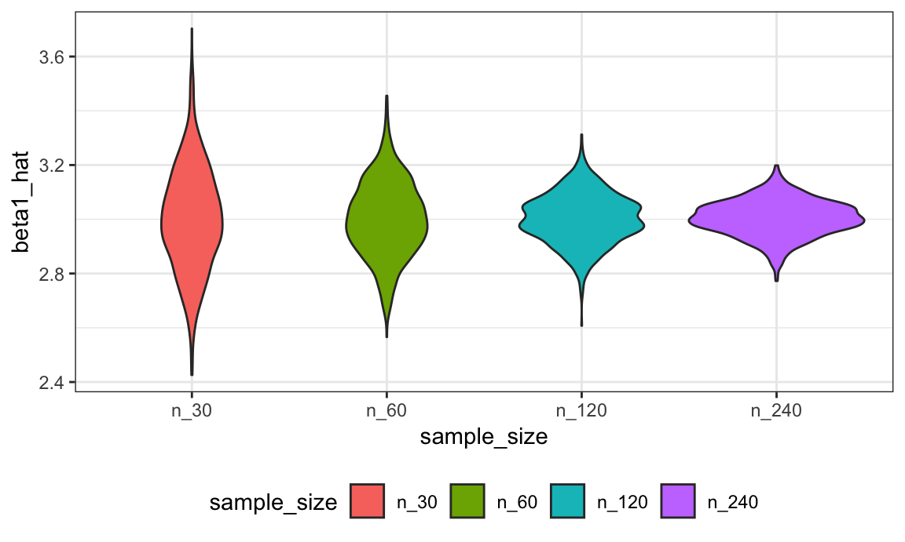
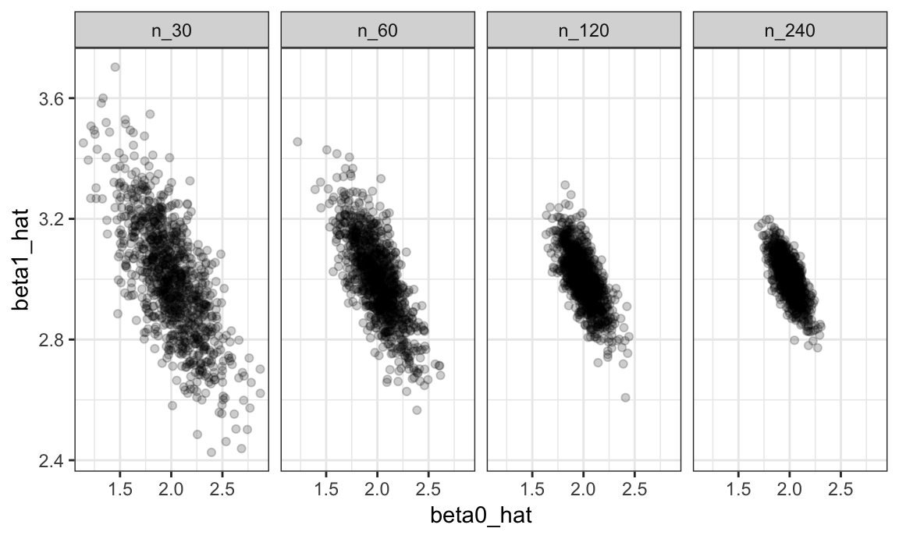

We’ve noted that functions are helpful when you repeat code more than twice; we’ve also noted that a lot of statistical methods involve doing the same thing a large number of times. Putting those together motivates a careful approach to iteratation; conducting simulations is a very relevant example.
This is the second module in the Iteration topic; the relevant slack channel is here.
I’ll write code for today’s content in a new R Markdown document called iteration_and_simulation.Rmd in the iteration repo / directory I started last time. The code chunk below loads the tidyverse and sets a seed for reproducibility.
library(tidyverse)
set.seed(1)We need a brief digression about lists before we do anything.
In R, vectors are limited to a single data class – all elements are characters, or all numeric, or all logical. Trying to join the following vectors will result in coersion, as would creating vectors of mixed types.
vec_numeric = 5:8
vec_char = c("My", "name", "is", "Jeff")
vec_logical = c(TRUE, TRUE, TRUE, FALSE)Lists provide a way to store anything you want. This flexibility is great, but is offset by a certain … clunkiness. Lists contain indexed elements, and the indexed elements themselves be scalars, vectors, or other things entirely.
l = list(vec_numeric = 5:8,
mat = matrix(1:8, 2, 4),
vec_logical = c(TRUE, FALSE),
summary = summary(rnorm(1000)))
l
## $vec_numeric
## [1] 5 6 7 8
##
## $mat
## [,1] [,2] [,3] [,4]
## [1,] 1 3 5 7
## [2,] 2 4 6 8
##
## $vec_logical
## [1] TRUE FALSE
##
## $summary
## Min. 1st Qu. Median Mean 3rd Qu. Max.
## -3.00805 -0.69737 -0.03532 -0.01165 0.68843 3.81028Lists can be accessed using names or indices, and the things in lists can be accessed in the way you would usually access an object of that type.
l$vec_numeric
## [1] 5 6 7 8
l[[1]]
## [1] 5 6 7 8
l[[1]][1:3]
## [1] 5 6 7Lists seem bizarre but are really usefulRight now, we’ll use them to hold general inputs and outputs of iterative processes. Even more importantly, data frames are actually a very specific kind of list – one comprised of vectors of the same length – which is why they can store variables of different types.
for loopsFor this example, I’m going to start with the pretty simple data frame defined below, and confirm that “under the hood” this is a list.
df = data_frame(
a = rnorm(20, 3, 1),
b = rnorm(20, 0, 5),
c = rnorm(20, 10, .2),
d = rnorm(20, -3, 1)
)
is.list(df)
## [1] TRUEI’d like to apply my simple mean_and_sd function from writing functions to each column of this dataframe. For completeness, that function is below.
mean_and_sd = function(x) {
if (!is.numeric(x)) {
stop("Argument x should be numeric")
} else if (length(x) == 1) {
stop("Cannot be computed for length 1 vectors")
}
mean_x = mean(x)
sd_x = sd(x)
tibble(
mean = mean_x,
sd = sd_x
)
}We can apply the mean_and_sd function to each column of df using the lines below. Throughout this content, I’ll take advantage of the fact that data frames are a kind of list – keeping this in mind when you’re iterating is really useful .
mean_and_sd(df[[1]])
## # A tibble: 1 x 2
## mean sd
## <dbl> <dbl>
## 1 2.70 1.12
mean_and_sd(df[[2]])
## # A tibble: 1 x 2
## mean sd
## <dbl> <dbl>
## 1 0.416 4.08
mean_and_sd(df[[3]])
## # A tibble: 1 x 2
## mean sd
## <dbl> <dbl>
## 1 10.1 0.191
mean_and_sd(df[[4]])
## # A tibble: 1 x 2
## mean sd
## <dbl> <dbl>
## 1 -3.43 1.18But now we’ve broken our “don’t repeat code more than twice” rule! Specifically, we’ve applied the same function / operation to the elements of a list sequentially. This is exactly the kind of code repetition for loops address
Below, I define an output list with the same number of entries as my target dataframe; a sequence to iterate over; and a for loop body that applies the mean_and_sd function for each sequence element and saves the result.
output = vector("list", length = 4)
for (i in 1:4) {
output[[i]] = mean_and_sd(df[[i]])
}This is already much cleaner than using four almost-identical lines of code, and will make life easier the larger our sequence gets.
In this example, I bypassed a common first step in writing loops because I already had the function I wanted to repeat. Frequently, however, I’ll start with repeated code segements, then abstract the underlying process into a function, and then wrap things up in a for loop.
mapA criticism of for loops is that there’s a lot of overhead – you have to define your output vector / list, there’s the for loop bookkeeping to do, etc – that distracts from the purpose of the code. In this case, we want to apply mean_and_sd to each column of df, but we have to scan inside the for loop to figure that out.
The map functions in purrr try to make the purpose of your code clear. Compare the loop above to the line below.
output = map(df, mean_and_sd)The first argument to map is the vector /list (/ data frame) we want to iterate over, and the second argument is the function we want to apply to each element. The line above will produce the same output as the previous loop, but is clearer and easier to understand (once you’re used to map …).
It’s sometimes necessary to be more specific in giving arguments to map. In particular, using .x = df for the input list and ~ mean_and_sd(.x) to specify the function applied to the input list (using .x as a placeholder) will produce the same result.
output = map(.x = df, ~ mean_and_sd(.x))This code (using map) is why we pointed out in writing functions that functions can be passed as arguments to other functions. The second argument in map(df, mean_and_sd) is a function we just wrote. To see how powerful this can be, suppose we wanted to apply a different function, say median, to each column of df. The chunk below includes both the loop and the map approach.
output = vector("list", length = 4)
for (i in 1:4) {
output[[i]] = median(df[[i]])
}
output = map(df, median)
# output = map(.x = df, ~ median(.x))Again, both options produce the same output, but the map places the focus squarely on the function you want to apply by removing much of the bookkeeping.
map variantsThere are some useful variants to the basic map function if you know what kind of output you’re going to produce. Below we use map_dbl because median outputs a single numeric value each time; the result is a vector instead of a list. Using the .id argument keeps the names of the elements in the input list.
output = map_dbl(df, median, .id = "input")If we tried to use map_int or map_lgl, we’d get an error because the output of median isn’t a integer or a logical. This is a good way to help catch mistakes when they arise.
Similarly, since we know mean_and_sd produces a data frame, we can use the output-specific map_dfr; this will produce a single data frame.
output = map_dfr(df, mean_and_sd, .id = "input")The map_df variant is helpful when your map statement is part of a longer chain of piped commands.
In reading data from the web, we wrote code that allowed us to scrape information in Amazon reviews; in writing functions we wrapped that code into a function called read_page_reviews which, for a given url, produces a data frame containing review titles, star ratings, and text.
library(rvest)
read_page_reviews <- function(url) {
h = read_html(url)
title = h %>%
html_nodes("#cm_cr-review_list .review-title") %>%
html_text()
stars = h %>%
html_nodes("#cm_cr-review_list .review-rating") %>%
html_text() %>%
str_extract("\\d") %>%
as.numeric()
text = h %>%
html_nodes(".review-data:nth-child(4)") %>%
html_text()
data_frame(title, stars, text)
}Learning Assessment: Use this function to read the five pages of reviews on the URLs defined in the code chunk below.
url_base = "https://www.amazon.com/product-reviews/B00005JNBQ/ref=cm_cr_arp_d_viewopt_rvwer?ie=UTF8&reviewerType=avp_only_reviews&sortBy=recent&pageNumber="
urls = str_c(url_base, 1:5) Solution
First I’ll define a vector of URLs to act as an input, and then I’ll iterate over that vector using both a for loop and a map_df statement.
output = vector("list", 5)
for (i in 1:5) {
output[[i]] = read_page_reviews(urls[[i]])
}
dynamite_reviews = bind_rows(output)
dynamite_reviews = map_df(urls, read_page_reviews)As with previous examples, using a for loop is pretty okay but the map_df call is clearer.
map2Importing the LoTR words data is a bit trickier. In writing functions we produced the function below, which reads a sub-table of the Excel file containing the data, cleans the result, and returns a tidy data frame.
lotr_load_and_tidy = function(path, range, movie_name) {
df = readxl::read_excel(path, range = range) %>%
janitor::clean_names() %>%
gather(key = sex, value = words, female:male) %>%
mutate(race = tolower(race),
movie = movie_name)
df
}In this case we can’t use map directly, because there are two arguments we need to iterate over – range and movie_name. To see this more clearly, we’ve written the complete import process using a for loop.
cell_ranges = list("B3:D6", "F3:H6", "J3:L6")
movie_names = list("fellowship", "two_towers", "return")
output = vector("list", 3)
for (i in 1:3) {
output[[i]] = lotr_load_and_tidy(path = "./data/LotR_Words.xlsx",
range = cell_ranges[[i]],
movie_name = movie_names[[i]])
}
lotr_tidy = bind_rows(output) %>%
select(movie, everything()) The map2 variant is handy when you have two input lists to iterate over. The implementation is similar to that for map: you supply the input lists and the function name, and map2 uses elements of the input lists as arguments to the function.
lotr_tidy =
map2_df(.x = cell_ranges, .y = movie_names,
~lotr_load_and_tidy(path = "./data/LotR_Words.xlsx",
range = .x, movie_name = .y)) %>%
select(movie, everything()) We can compare this to code we wrote in writing functions, when we had given the path argument a default value.
lotr_tidy =
bind_rows(
lotr_load_and_tidy("./data/LotR_Words.xlsx", "B3:D6", "fellowship_ring"),
lotr_load_and_tidy("./data/LotR_Words.xlsx", "F3:H6", "two_towers"),
lotr_load_and_tidy("./data/LotR_Words.xlsx", "J3:L6", "return_king")) %>%
select(movie, everything()) In this case it’s not obvious which coding approach is better – using map2_df or three function calls inside bind_rows – and that happens. No matter what, though, you should be able to write code either way so you have a choice instead of being constrained by your skillset!
Last class we wrote a short function to simulate data from a simple linear regression, fit the regression model, and return estimates of regression coefficients. Specifically, we generate data from \[ y_i = \beta_0 + \beta_1 x_i + \epsilon_i \] for subjects \(1 \leq i \leq n\) with \(\epsilon_i \sim N[0,1]\) and return estimates \(\hat{\beta}_0, \hat{\beta}_1\). That function is below.
sim_regression = function(n, beta0 = 2, beta1 = 3) {
sim_data = tibble(
x = rnorm(n, mean = 1, sd = 1),
y = beta0 + beta1 * x + rnorm(n, 0, 1)
)
ls_fit = lm(y ~ x, data = sim_data)
tibble(
beta0_hat = coef(ls_fit)[1],
beta1_hat = coef(ls_fit)[2]
)
}Important statistical properties of estimates \(\hat{\beta}_0, \hat{\beta}_1\) are established under the conceptual framework of repeated sampling. If you could draw from a population over and over, your estimates will have a known mean and variance: \[ \hat{\beta}_0 \sim \left[\beta_0, \sigma^2 \left(\frac{1}{n} + \frac{\bar{x}}{\sum (x_i - \bar{x})^2}\right) \right] \mbox{ and } \hat{\beta}_1 \sim \left[\beta_1,\frac{\sigma^2}{\sum (x_i - \bar{x})^2} \right] \] (Because our simulation design generates errors from a Normal distribution we also know that the estimates follow a Normal distribution, although that’s not guaranteed by least squares estimation.)
In the real world, drawing samples is time consuming and costly, so “repeated sampling” remains conceptual. On a computer, though, drawing samples is pretty easy. That makes simulation an appealing way to examine the statistical properties of your estimators.
Let’s run sim_regression() 100 times to see the effect of randomness in \(\epsilon\) on estimates \(\hat{\beta}_0, \hat{\beta}_1\).
output = vector("list", 100)
for (i in 1:100) {
output[[i]] = sim_regression(30)
}
sim_results = bind_rows(output)Taking a look at the for loop we used to create these results, you might notice that there’s no input list – the sequence is used to keep track of the output but doesn’t affect the computation performed inside the for loop. In cases like these, the purrr::rerun function is very handy.
sim_results =
rerun(100, sim_regression(30, 2, 3)) %>%
bind_rows()Structurally, rerun is a lot like map – the first argument defines the amount of iteration and the second argument is the function to use in each iteration step. As with map, we’ve replaced a for loop with a segment of code that makes our purpose much more transparent but both approaches give the same results.
Let’s make some quick plots and compute some summaries for our simulation results.
sim_results %>%
ggplot(aes(x = beta0_hat, y = beta1_hat)) +
geom_point()
sim_results %>%
gather(key = parameter, value = estimate, beta0_hat:beta1_hat) %>%
group_by(parameter) %>%
summarize(emp_mean = mean(estimate),
emp_var = var(estimate)) %>%
knitr::kable(digits = 3)| parameter | emp_mean | emp_var |
|---|---|---|
| beta0_hat | 1.996 | 0.084 |
| beta1_hat | 3.011 | 0.055 |
This is great! We’ve seen how our estimates are distributed under our simulation scenario, and can compare empirical results to theoretical ones. In this way, we can build intution for fundamental statistical procedures under repeated sampling in a way that’s not possible with single data sets.
Sample size makes a huge difference on the variance of estimates in SLR (and pretty much every statistical method). Let’s try to clarify that effect through simulating at a few sample sizes.
I’ll start this process with a for loop around the code I established above using rerun (I could start from scratch by nesting one for loop in another for loop, but let’s not).
n_list = list("n_30" = 30,
"n_60" = 60,
"n_120" = 120,
"n_240" = 240)
output = vector("list", length = 4)
for (i in 1:4) {
output[[i]] = rerun(100, sim_regression(n_list[[i]])) %>%
bind_rows
}After this loop, output is a list of 4 data frames; each data frame contains the results of 100 simulations at different sample sizes.
Before we spend time looking at the results of the simulation, let’s recast this using map. I want to use a single function in my call to map_df, so I’m going to write a wrapper for the call to rerun that allows me to change the parameters of the simulation (i.e. the argument to sim_regression) and the number of simulation replicates (i.e. the first argument to rerun). Once I have this, I’ll call map_df to perform the complete simulation.
simulate_n_regressions = function(n_runs = 100, n, beta0 = 2, beta1 = 3) {
rerun(n_runs, sim_regression(n, beta0, beta1)) %>%
bind_rows()
}
sim_results =
map_df(.x = n_list, ~ simulate_n_regressions(n = .x), .id = "sample_size") Using a different call, I could increase the number of simulation runs or vary the parameters in the regression model:
sim_results =
map_df(.x = n_list, ~ simulate_n_regressions(n = .x, n_runs = 1000, beta0 = 2, beta1 = 3),
.id = "sample_size") Let’s take a look at what we’ve accomplished in our simulations! First I’ll take a look at the distribution of slope estimates across sample sizes.
sim_results %>%
mutate(sample_size = fct_inorder(sample_size)) %>%
ggplot(aes(x = sample_size, y = beta1_hat, fill = sample_size)) +
geom_violin()
These estimates are centered around the truth (3) for each sample size, and the width of the distribution shrinks as sample size grows.
Next, I’ll look at the bivariate distribution of intercept and slope estimates across sample sizes.
sim_results %>%
mutate(sample_size = fct_inorder(sample_size)) %>%
ggplot(aes(x = beta0_hat, y = beta1_hat)) +
geom_point(alpha = .2) +
facet_grid(~sample_size)
The variability in the slope estimates was shown in the violin plot, but now we have a sense for the bivariate distribution of intercepts and slopes. Estimates of the intercept and slope are correlated with each other; this is expected from theoretical results describing the joint distribution of estimated regression coefficients.
Lastly I’ll look at the empirical mean and variance of these estimates.
sim_results %>%
gather(key = parameter, value = estimate, beta0_hat:beta1_hat) %>%
group_by(parameter, sample_size) %>%
summarize(emp_mean = mean(estimate),
emp_var = var(estimate)) %>%
knitr::kable(digits = 3)| parameter | sample_size | emp_mean | emp_var |
|---|---|---|---|
| beta0_hat | n_120 | 1.998 | 0.017 |
| beta0_hat | n_240 | 1.997 | 0.009 |
| beta0_hat | n_30 | 1.999 | 0.073 |
| beta0_hat | n_60 | 2.000 | 0.037 |
| beta1_hat | n_120 | 3.002 | 0.008 |
| beta1_hat | n_240 | 3.004 | 0.004 |
| beta1_hat | n_30 | 3.001 | 0.036 |
| beta1_hat | n_60 | 3.001 | 0.019 |
These values are consistent with the formulas presented above. This kind of check is a useful way to support derivations (although they don’t serve as a formal proof in any way).
Iteration and simulation can be tricky – the readings below will help as you work through this!
mappurrr tutorial has a lot of useful information and exampleslapply and others instead of mapmap to lapplyOne of the best ways to learn about writing functions is to see what other people have done and try to figure out how it works. We’ve seen a couple of examples in other contexts that might be worth revising
map to generate power curves at various sample sizesstarwars dataset (in the tidyverse) using the Star Wars API processes list output (from the API) using several map variantsThe code that I produced working examples in lecture is here.